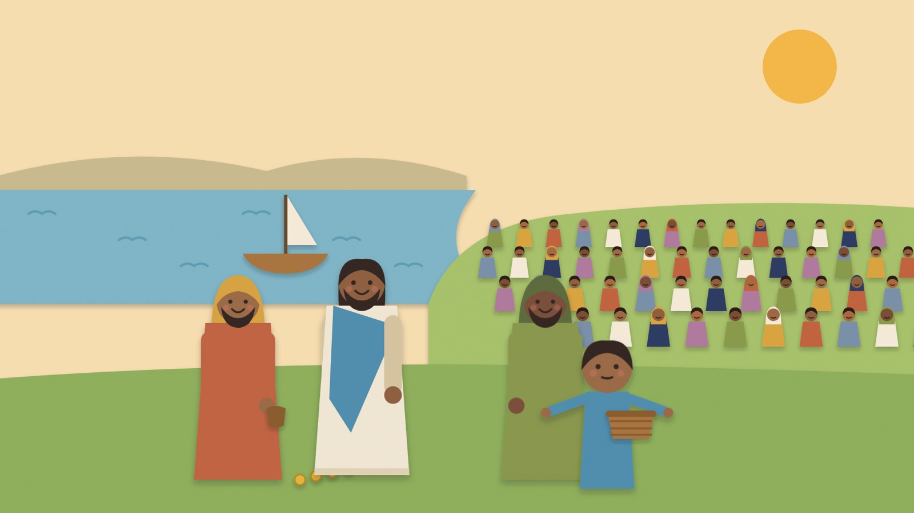
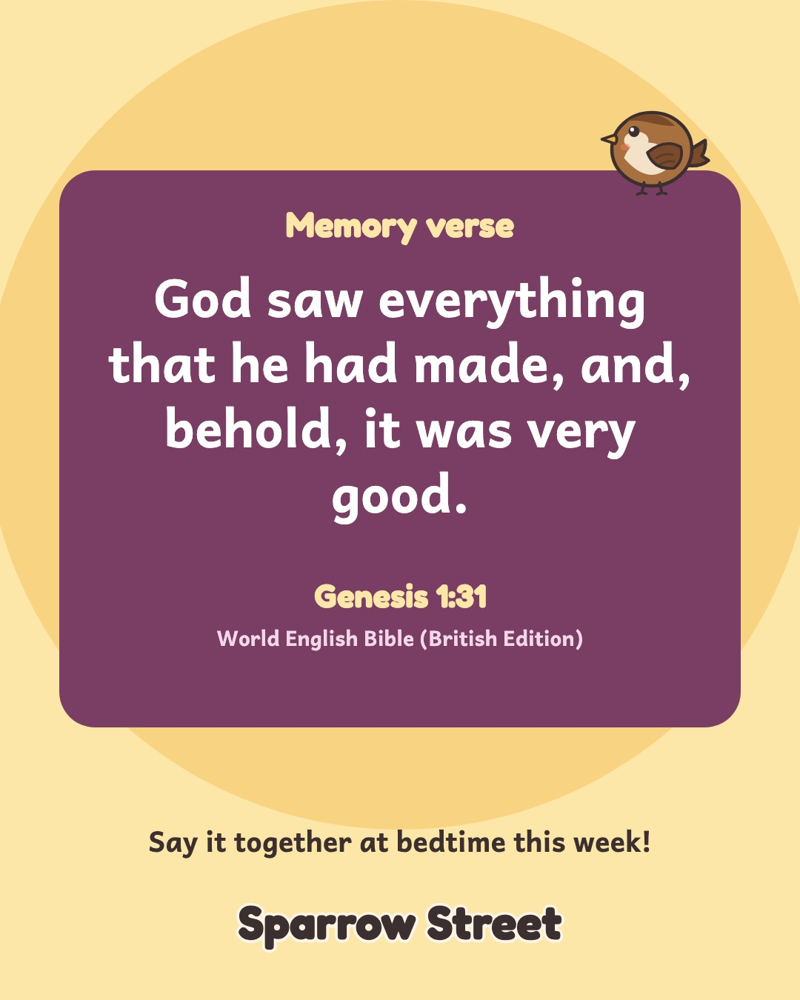
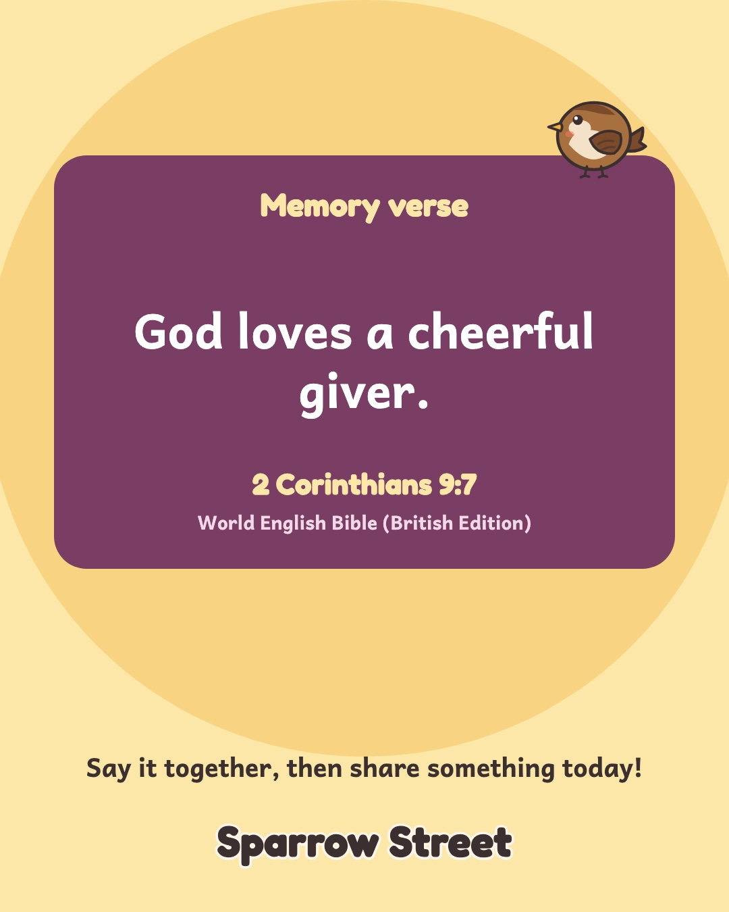
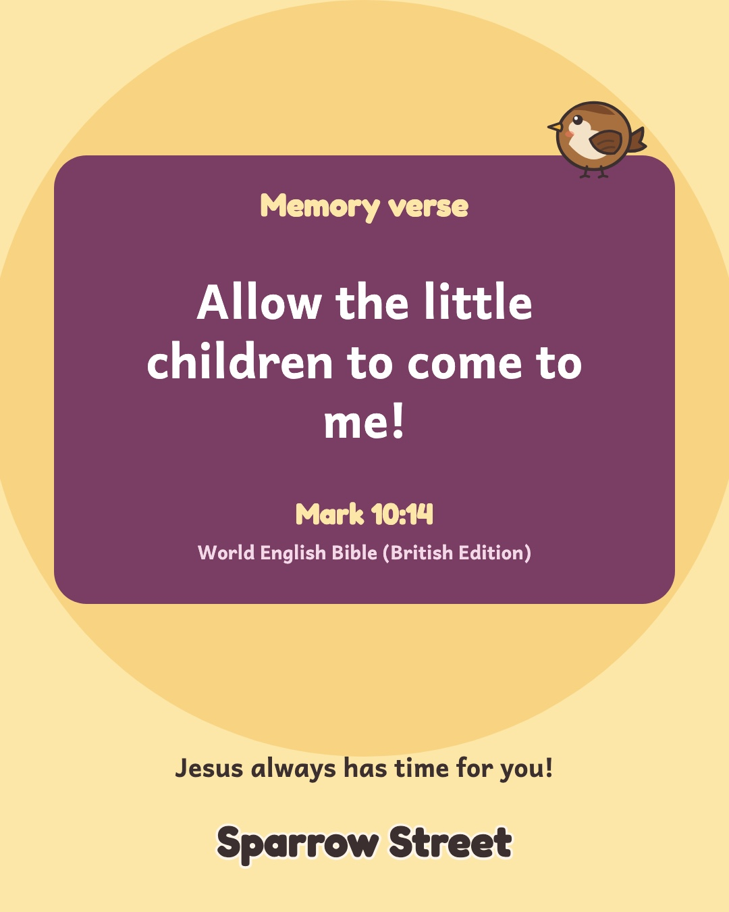

Bible stories for little ones.
Gentle cartoons and songs for ages 3 to 6, free on YouTube.
This season on Sparrow Street
| Out | The Bible story | Passage |
|---|---|---|
| God makes the world | Genesis 1 and 2 | |
| A boy shares his lunch | John 6:1 to 14 | |
| Jesus welcomes the children | Mark 10:13 to 16 | |
| Jesus calms the storm | Mark 4:35 to 41 | |
| The kind Samaritan | Luke 10:25 to 37 |
| Out | The Bible story | Passage |
|---|---|---|
| Zechariah’s big surprise | Luke 1:5 to 25 | |
| An angel visits Mary | Luke 1:26 to 38 | |
| Mary visits Elizabeth | Luke 1:39 to 56 | |
| Joseph’s dream | Matthew 1:18 to 25 | |
| Jesus is born | Luke 2:1 to 7 | |
| The shepherds hear good news | Luke 2:8 to 20 | |
| Simeon and Anna | Luke 2:22 to 38 | |
| The wise men bring gifts | Matthew 2:1 to 12 | |
| Jesus is kept safe in Egypt | Matthew 2:13 to 23 |
| Out | The Bible story | Passage |
|---|---|---|
| The boy Jesus at the temple | Luke 2:41 to 52 | |
| Zacchaeus | Luke 19:1 to 10 | |
| God calls Samuel | 1 Samuel 3:1 to 10 | |
| Ruth and Naomi | Ruth 1 and 2 | |
| The lost sheep | Luke 15:3 to 7 | |
| Blind Bartimaeus | Mark 10:46 to 52 | |
| Jesus washes his friends’ feet | John 13:1 to 17 | |
| David and Goliath | 1 Samuel 17 | |
| Daniel and the lions | Daniel 6 | |
| Jonah | Jonah 1 to 3 | |
| Baby Moses and Miriam | Exodus 2:1 to 10 | |
| Noah and the rainbow promise | Genesis 6 to 9 | |
| God sends the Holy Spirit | Acts 2:1 to 41 |
Every episode, the same cosy shape
About 10–11 minutes, so little ones always know what comes next.
A small problem
Something everyday goes wrong on the street.
Gather round
Nana opens the Story Nook.
The Bible story
Told with Nana’s paper puppets.
The memory verse
An action song to sing along to.
Remember and pray
Three questions, then a thank-you prayer.

Told in cut paper
Each Bible story stays close to the words of Scripture.
- Quotes from the World English Bible (British Edition)
- One passage and one memory verse each time
- Hard moments kept short, then comfort straight away
- Calm by design: soft paper colours, an unhurried pace, no flashing or sudden loud noises
Sing the memory verse
An original song in every episode, built on one Bible verse.

Very Good!
Genesis 1:31

A Cheerful Giver
2 Corinthians 9:7

Come to Me
Mark 10:14
Peace! Be Still!
Mark 4:39
Stop and Help
Matthew 22:39
Ready for Sunday morning
- About 10–11 minutes
- Long enough for a story, short enough for a children’s slot.
- Questions in every description
- Talk prompts for parents and teachers under each video.
- Free on YouTube
- Every episode, with no sign-up and nothing to buy.
New every Tuesday and Friday
Episodes go up at 2pm UK time. Every one is free, thanks to grown-ups who give.